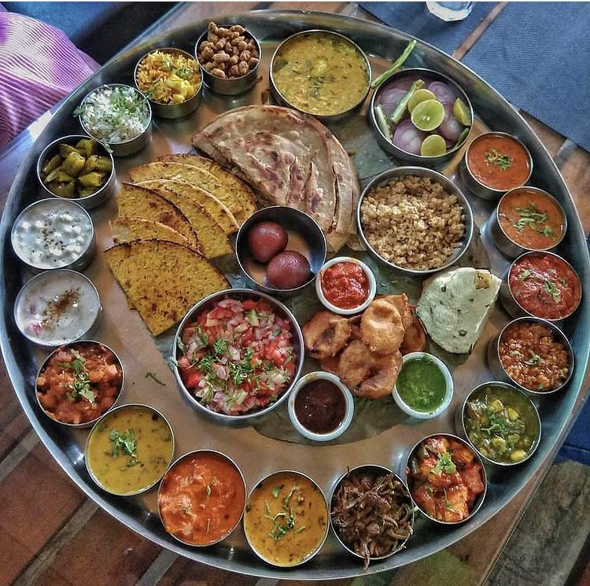

Embark on a majestic journey back in time with an elephant ride at Amber Fort. This iconic experience allows you to ascend the steep slopes to this 16th-century fortress in regal style. As you sway gently atop the friendly elephants, you'll relive the grandeur of the Rajput rulers and soak in breathtaking views of the surrounding hills. It's a memorable way to connect with Jaipur's royal heritage and savor the charm of a bygone era.
Activities
Elephant Ride at Amber Fort
Shopping at Johari Bazaar
Shopping at Johari Bazaar in Jaipur is a vibrant and culturally rich experience. This bustling market, nestled in the old Pink City, is a treasure trove of jewelry, gemstones, and traditional Rajasthani attire. Known for its exquisite Kundan and Meenakari work, it's a paradise for jewelry enthusiasts. The lively atmosphere, narrow lanes, and colorful displays make it a must-visit destination for those seeking authentic Rajasthani craftsmanship and unique souvenirs.

Cultural performances
Cultural performances in Jaipur are a captivating journey into Rajasthan's rich heritage. From soul-stirring folk dances like Ghoomar to melodious Rajasthani music, these performances are a feast for the senses. The vibrant costumes, rhythmic drum beats, and graceful movements showcase the state's cultural diversity. Whether at the iconic Amer Fort or local theaters, these shows offer a memorable glimpse into Rajasthan's traditions, leaving visitors enchanted by its artistic allure.
Camel Safari
Embark on a desert adventure with Camel Safaris in Jaipur. These unique journeys take you through the Thar Desert's golden sands, offering a taste of Rajasthan's nomadic life. As you ride atop these gentle giants, the vast expanse of dunes and tranquil desert vistas unfold before you. It's a serene and authentic way to experience the desert's beauty, complete with colorful sunsets and a deep connection to the land.

Hot Air Balloon Ride
Soar above the Pink City in a Hot Air Balloon Ride in Jaipur. This mesmerizing experience allows you to witness Jaipur's iconic landmarks, like Amber Fort and Hawa Mahal, from a whole new perspective. As you gently float with the wind, the city's vibrant colors, intricate architecture, and breathtaking landscapes unfold below. It's a magical journey that offers a bird's-eye view of Jaipur's beauty, making it an unforgettable adventure for all.
Enjoying a Movie at Raj Mandir Cinema Hall
Watching a movie at Raj Mandir Cinema Hall is an iconic Jaipur experience. This historic cinema, known as the "Pride of Asia," boasts exquisite architecture and opulent interiors. As you settle into your seat, the grandeur of the hall enhances the cinematic magic. With its diverse film selection, including Bollywood blockbusters, it's a chance to immerse in India's cinematic culture while relishing the unique ambiance of this legendary theater.
Enjoying Rajasthani Thali
Indulge in the flavors of Rajasthan with a Rajasthani Thali in Jaipur. This culinary experience offers a delightful array of traditional dishes, from dal baati churma to gatte ki sabzi, served on a single platter. The vibrant colors and rich flavors of Rajasthani cuisine come alive as you savor each bite. It's not just a meal; it's a cultural exploration through food that leaves your taste buds and soul satisfied.
Sound and Light Show at Amber Fort
The Sound and Light Show at Amber Fort is a captivating journey through history. As night falls, the majestic fort comes alive with vibrant lights and resonant narratives. Illuminating the tales of valor and grandeur, this immersive experience transports you to the royal past of Jaipur. Against the backdrop of the beautifully lit fort, it's a mesmerizing spectacle that brings alive the rich heritage and legends of Rajasthan.
Trekking in Jaipur
Trekking in Jaipur offers a unique blend of adventure and natural beauty. Amidst the rugged Aravalli hills, you'll discover picturesque trails and lush landscapes. From easy walks to more challenging hikes, there's something for everyone. Along the way, encounter serene lakes, ancient temples, and panoramic views of the Pink City. It's a refreshing escape into nature, allowing you to explore Jaipur's scenic wonders beyond its bustling streets.
Horse Riding
Horse riding in Jaipur is a delightful journey through the city's vibrant culture and scenic beauty. Saddle up and explore historic forts, tranquil lakes, and traditional villages. These majestic animals provide a unique perspective of Jaipur's rich heritage. Whether you're a novice or an experienced rider, the city offers various trails and experiences, making it an enjoyable and memorable equestrian adventure in the Pink City.